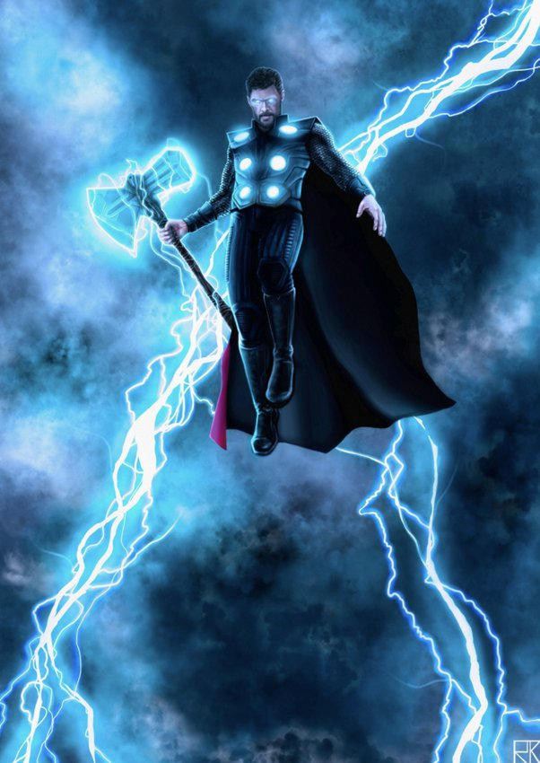

Random facts about Thor.

"Ragnarok" actually means "Twilight if the gods."

Thor's hammer once gave him the ability to travel through time.

To live as long as Asgardians, they need to eat a specific fruit that grows only in Asgard. So they are not immortals.

30 different hammers were made for Thor: The Dark World to make sure they were available in case one was damage.